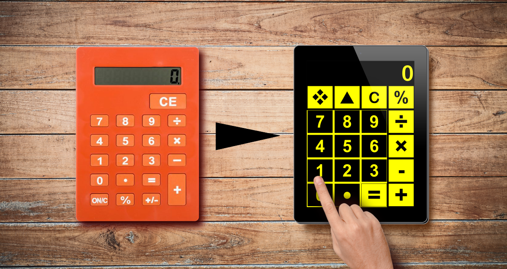
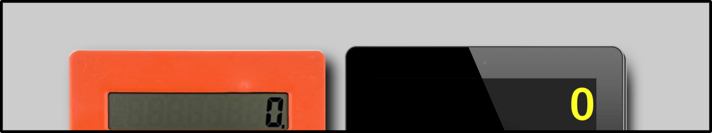
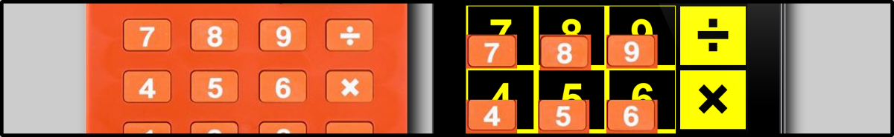
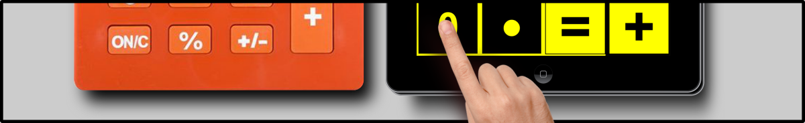
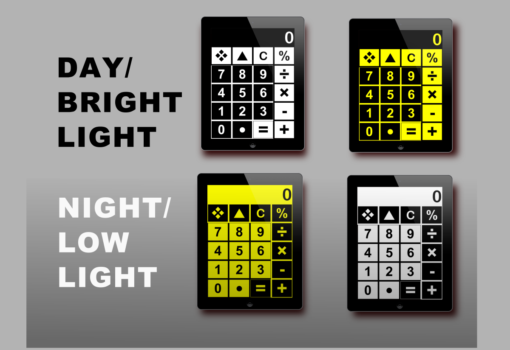
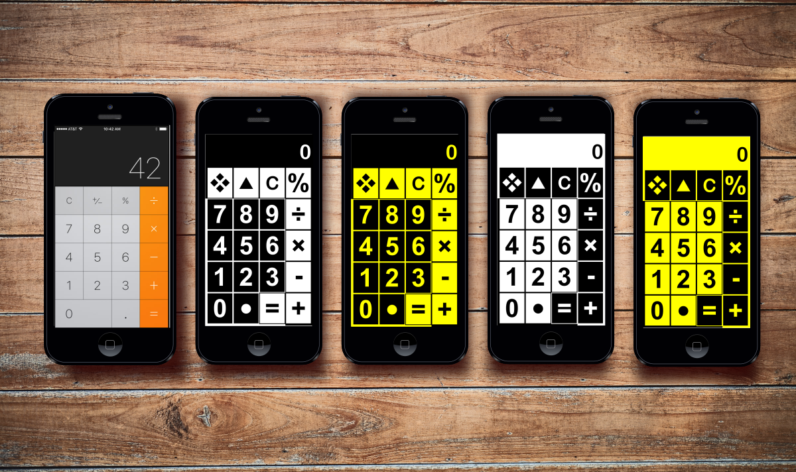
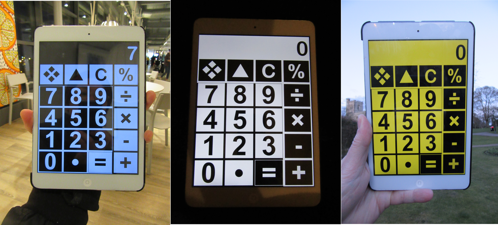

Download Section

Big Calc is digital version of the Jumbo Visual Impairment calculator.

It has lots of extra Visual Aid features that the real-life version does not have.
LCD Display

The LCD Display is much larger and clearer. On a normal Calculator, the numbers on the LCD are black on grey, on the Big Calc, the numbers are on a high contrast background so they are easy to read.
Large Buttons

The Buttons are Huge! They are as big as they can be, there is zero wasted screen space. The bigger the button, the easier it is to be accurate.
Large Numbers

The Numbers are also MASSIVE! The number size is also much bigger than the real-life Calculator.
High Contrast Modes

There are 4 high contrast modes for day and night/low light viewing. Just Tap the ❖ key to swap modes. Your favorite mode will be saved even if you close the app and will remain until you change it.
iPhone Compatibility

Big Calc is also available for iPhones, it is far more low vision-friendly than the built-in calculator.
Lighting Conditions

Big Calc always has good contrast, in very low or bright lighting. You do not have to increase your iPad brightness. Look at the photos of Big Calc under artificial indoor lighting, in the dark, and in outdoor daylight.